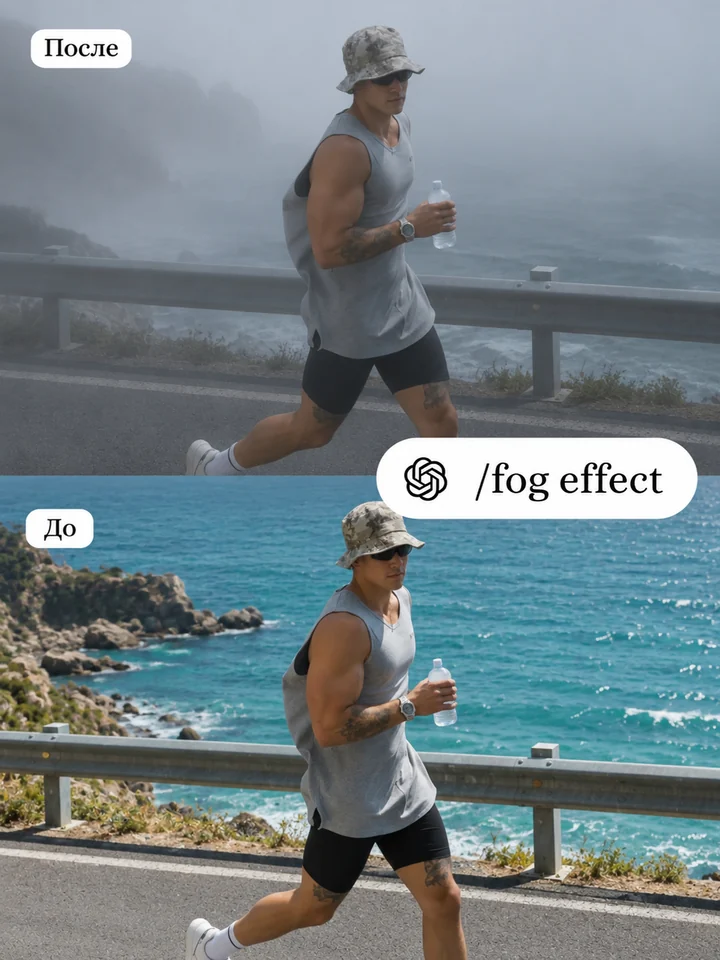
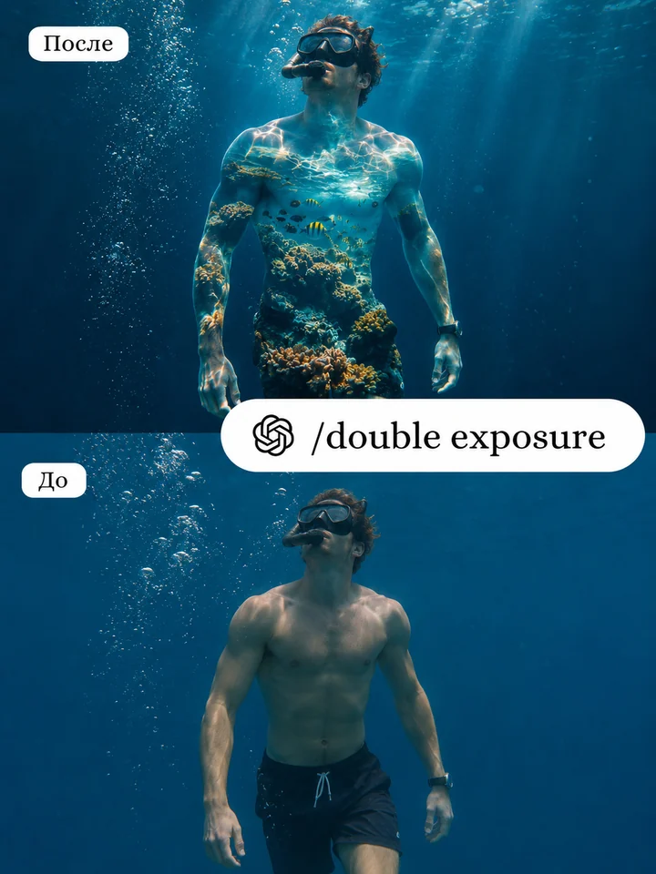
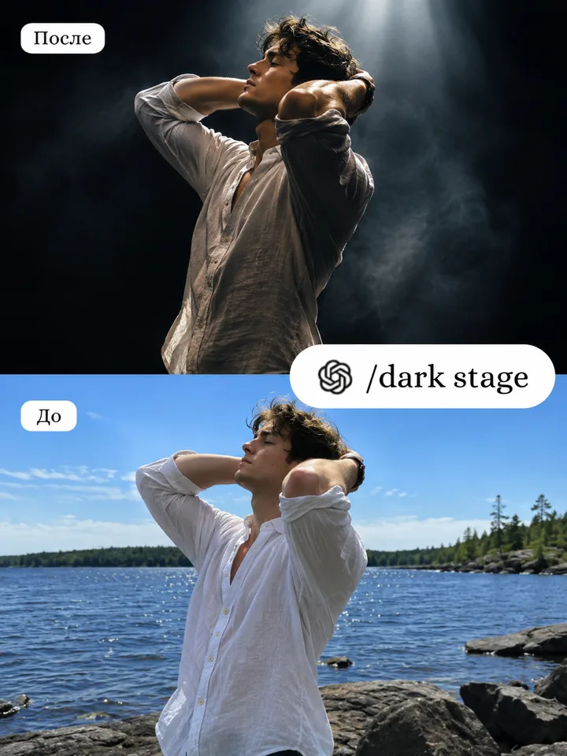
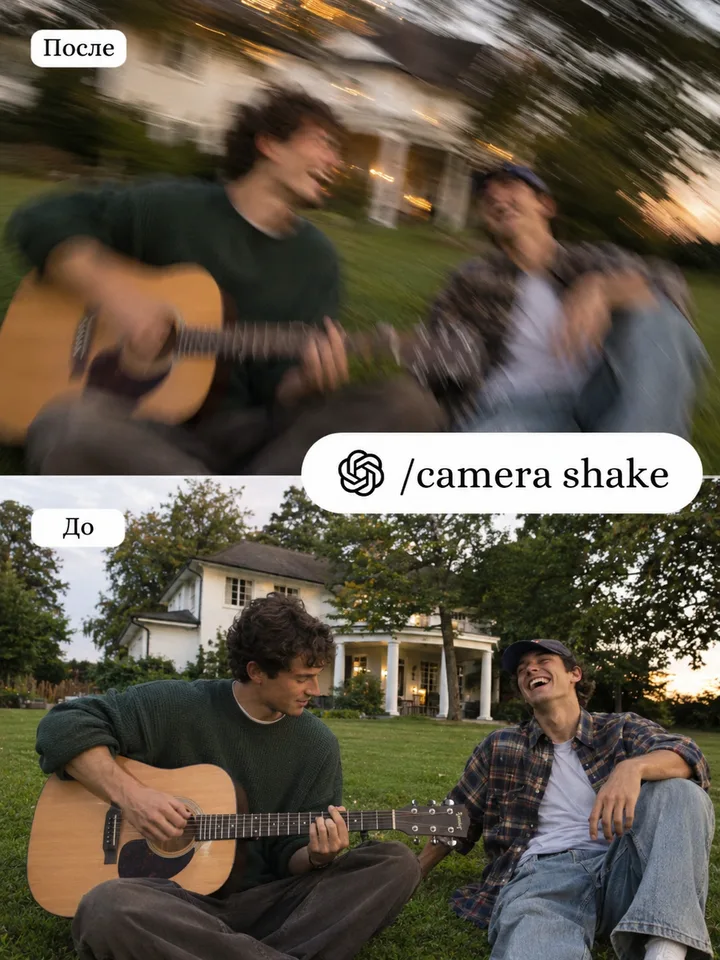
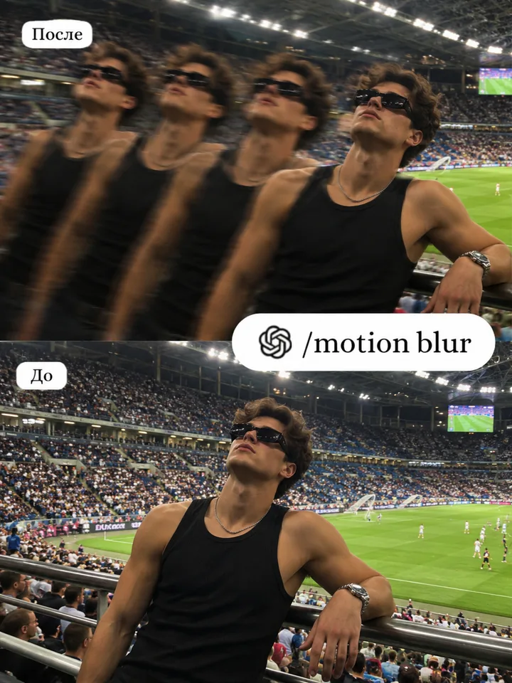

Коды ChatGPT для фото
Прикрепи фото, напиши короткий код, и ChatGPT переделает кадр. 20 кодов из каруселей и ещё 100


Как пользоваться
- Открой ChatGPT и начни новый чат. Подойдёт и бесплатный, но картинок там меньше
- Нажми «+» в поле ввода и прикрепи своё фото
- Нажми «Скопировать» у нужного кода, вставь его в поле и отправь
Можно сочетать два кода, например
/golden hour + /film grainКоды из каруселей



/speedshotкадр в движении, как на скорости/fog effectгустой туман вокруг/colorgrade cinematic HDRцвет как в кино/symmetrical compositionидеальная симметрия кадра/remove objectубрать лишний предмет/luxuryобстановка как из люксового бутика/editorialжурнальный портрет со светом/horrorжуткая версия того же кадра/motion blurразмытие в движении/double exposureдвойная экспозиция/zoom500отъехать от точки до целого пейзажа/zoom100подъехать к герою вплотную/upscaleубрать размытость, больше деталей/dark stageты на тёмной сцене под софитом/hills moodзолотые холмы на закате за спиной/camera shakeживая тряска камеры, движение/cosmosdream.pngночная мечтательная версия кадра/lofi lightтёплый мягкий свет и плёночное зерно/night modeтот же кадр ночью под фонарём/soft blue glowмягкое голубое свечениеСвет и цвет
/golden hourтёплый закатный свет/blue hourхолодные сумерки/neon nightнеоновые отражения ночного города/film grainплёночное зерно/portra filmтёплые плёночные цвета/black and whiteчёрно-белое с глубоким контрастом/teal and orangeкиношные бирюза и оранжевый/soft glowмягкое свечение/moody darkтёмное настроение, глубокие тени/pastel tonesпастельные цвета/vintage 90sфото как из 90-х/polaroidрамка и цвета полароида/high keyсветлое и воздушное/low keyсвет только на лице/sunset backlightконтровой закатный светПогода и сезоны
/rainдождь и мокрый асфальт/snowснегопад/autumnосенняя листва/spring bloomцветущие деревья/sunny dayяркое солнце и чёткие тени/stormгрозовое небо/morning mistутренняя дымка/heat hazeмарево жары/starry skyзвёздное небо/auroraсеверное сияниеКамера
/wide angleширокий угол/fisheyeрыбий глаз/drone shotвид сверху с дрона/low angleснизу, герой выглядит мощно/close upкрупный план/bokehразмытый фон/tilt shiftэффект миниатюры/long exposureдлинная выдержка/flash photoвспышка как на тусовке/35mm filmкадр на плёнку 35 мм/cctvкадр с камеры наблюдения/night modeночной режим телефонаСтиль
/animeаниме/3d cartoonобъёмный мультяшный герой/claymationпластилиновая анимация/watercolorакварель/oil paintingживопись маслом/pencil sketchкарандашный набросок/comic bookкомикс/pixel artпиксель-арт/toy bricksиз игрушечных кубиков/low polyнизкополигональная 3D/ukiyo-eяпонская гравюра/pop artпоп-арт/stained glassвитраж/paper cutвырезанная бумага/embroideryвышивка/neon signнеоновая вывеска/blueprintчертёж/stickerстикер с белой обводкойПортрет
/retouch skinаккуратная ретушь кожи/studio portraitстудийный портрет/business headshotделовое фото для профиля/passport photoфото на документы/old meя в старости/young meя в детстве/fix lightingровный свет на лице/remove glareубрать блики/open eyesоткрыть закрытые глаза/smileлёгкая улыбка/suitсменить одежду на костюм/haircutновая стрижка/beardдобавить бороду/natural makeupестественный макияж/tanлёгкий загарФон и объекты
/remove backgroundубрать фон/white backgroundбелый фон/replace skyзаменить небо/remove peopleубрать прохожих/add reflectionотражение в воде/extend imageдорисовать края кадра/upscaleповысить чёткость/restore old photoвосстановить старое фото/colorizeраскрасить чёрно-белое/clean roomубрать бардак в комнате/add plantsдобавить зелень/city viewночной город за окном/beachперенести на пляж/in parisперенести в Париж/in spaceотправить в космосДля бизнеса и контента
/product shotпредметная съёмка/flat layраскладка сверху/ad posterрекламный постер/magazine coverобложка журнала/thumbnailобложка для видео/menu photoфото блюда для меню/real estateинтерьер как для объявления/mockupмакет на экране телефона/mascotталисман из твоего фото/pet portraitпортрет питомца/food close upаппетитный крупный план еды/infographicинфографика/storyboardраскадровка/memeмем/cinematic stillкадр из фильмаГотово. Сохрани страницу в закладки, пригодится
Если что-то пошло не так
ChatGPT пишет, что картинки закончились
На бесплатном тарифе картинок меньше. Попробуй позже, когда лимит обновится
ChatGPT ответил текстом, а не картинкой
Допиши после кода: «Сделай картинку по этому фото»
Лицо получилось не похожим
Напиши в тот же чат: «Сохрани лицо и позу как на фото». Или возьми фото, где лицо крупнее и светлее